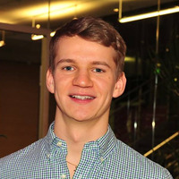

Felix Friedrich
Meta FAIR, Montreal, Canada
 felixfriedrich {at} meta {dot} com
felixfriedrich {at} meta {dot} com
felixfriedrich {at} meta {dot} com
News. I have joined Meta FAIR as a postdoc in Montreal, Canada, and am working on multimodal AI models in the group of Adriana Romero Soriano and Michal Drozdzal. Please check out the latest news articles about our work at MIT technology review and TU Darmstadt website. Furthermore we are happy to showcase the newest demos on huggingface about our work: Fair Diffusion explorer and Sega demo.
Mission. My research interests are centered around artificial intelligence (AI) and how we can make such AI systems socially acceptable. For one, I focus on incorporating the human in the loop. Inspiration can come from cognitive science since the exploration and consideration of human behavior are inevitable and possibly the best motivation to improve current models. ChatGPT is just one example here where human interaction boosted performance and made people doubt that creativity is dead and AI is solved. While both are incorrect, it still demonstrates massive performance improvement through human interaction and the impact on current societies. On the other hand, we see that current models are heavily biased. This is not so surprising as they are trained weakly supervised on unfiltered data from the web and hence run the risk of reflecting or shifting these (web) biases. Therefore, I am also interested in better understanding the learned representations in these models and in how to debias them in arbitrary directions, paving the way for future AI models. To this end, I want to make use of human capabilities to incorporate knowledge outside of the rigid range of purely data-driven approaches.
Timeline.
| 2025 - now: | Postdoc @ Meta FAIR in Montreal, Canada. |
| 2024 - 2025: | Researcher and Co-lead at Lab1141, AlephAlpha x TU Darmstadt, Germany. |
| 2021 - 2025: | Member of 3AI at Hessian.AI (personal site). |
| 2021 - 2025: | Ph.D. student at the Machine Learning Lab, CS Department, TU Darmstadt, Germany. |
| 2020: | Erasmus+ at Chalmers University of Technology in Gothenburg, Sweden. |
| 2019 - 2021: | M.Sc. in computer science with minor in psychology from TU Darmstadt, Germany. |
| 2018 - 2021: | M.Sc. (with honors) in autonomous systems from TU Darmstadt, Germany. |
| 2017: | Research internship on intelligent autonomous driving systems at IAV, Germany. |
| 2014 - 2017: | B.Sc. in electrical engineering from TU Dortmund, Germany. |
Supervised Courses.
| WS 2024 | Prof. Dr. Kristian Kersting, Probabilistic Graphical Models |
| WS 2023 | Prof. Dr. Kristian Kersting, Probabilistic Graphical Models |
| SS 2022 | Prof. Dr. Kristian Kersting, Data Mining and Machine Learning |
| WS 2021 | Prof. Dr. Kristian Kersting, Introduction to AI |
| SS 2021 | Prof. Dr. Kristian Kersting, Deep Learning: Architectures and Methods |
| SS 2020 | Prof. Dr. Kristian Kersting, Statistical Machine Learning |
Publications
Selected publications from AIML Lab projects. Use the search and filters to explore recent work.
Outputs
–
Latest Year
–
Top Type
–
Loading publications…